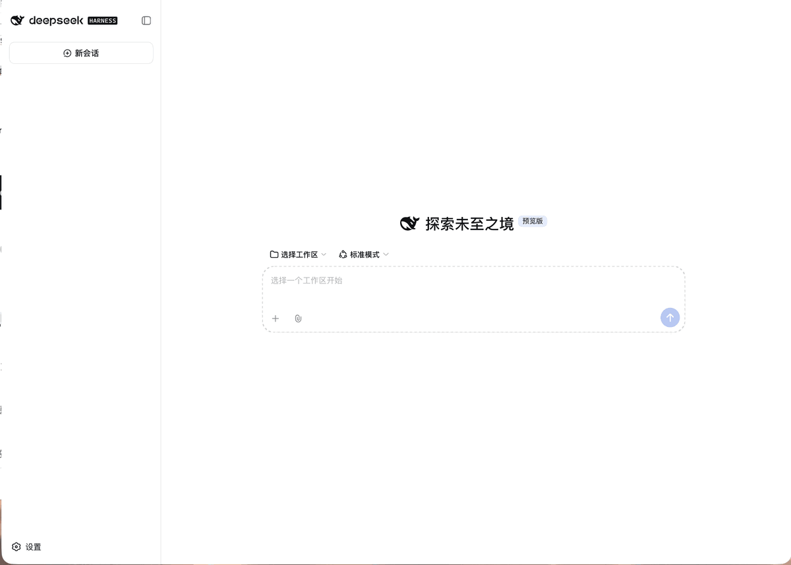

在 DSH 里，像 SSH 一样用你的 VPS
21 条零 token 命令看状态，对话里开一个真终端自己动手，或者直接跟 AI 说一句话让它上服务器干活 —— 全部经 SSH 密钥登录，改动按风险分级确认，改文件先备份、改防火墙先设连通性保险。
$ dsh plugin add dsh-vps-manager
装完重启 DSH，到 设置 → VPS 管理 添加机器。仅支持 SSH 密钥登录。
看信息、跟 AI 说话、按菜谱安装 —— 各走各的路
| 看信息 | 跟 AI 说话 | 按菜谱安装与维护 | |
|---|---|---|---|
| 怎么用 | /vps-sysinfo 这类命令 | 「给这台装个 nginx，把 a.com 反代到 3000 端口」 | /vps-install <菜谱id> 看计划，/vps-yes 执行 |
| 走不走模型 | 不走 | 走 | 不走 |
| 花费 | 零 token | 正常消耗 token | 零 token |
| 能做什么 | 固定的只读查询 | SSH 能做的都能做，按风险分级确认 | 29 条可重复执行的菜谱 |
一个引擎，三个入口：命令、终端、AI 工具
设置页、/vps- 命令和 AI 工具共用同一套执行机制：会改东西的操作跑成远端任务，断线后在服务器上继续；同一台机器上的改动一个接一个执行；每次执行都记审计日志。
21 条零 token 命令
看状态、装软件、重启并等机器回来，全程不走模型、不花 token。
VPS 模式
对话头部点一下，这个对话就绑定这台服务器；一个窗口操作服务器，另一个窗口照常写本机代码。
真实的连接状态
头部方块 灰 没选 · 黄 连接中 · 绿 已连上 · 红 连不上；连不上直接说原因，带「重试」。
对话里的终端
真终端（xterm.js + ssh -tt），top、vim、docker exec -it 都能用；最小化、切对话不丢内容，断线自动接回。
对话里的文件管理
服务器上的「访达」：拖进来上传、右键下载、双击编辑、删除进回收站可还原；覆盖前自动备份。
让 AI 操作服务器
5 个工具，按风险分级确认：只读自动、改动问你、高危再问。档位可按机器、分组、全局设置。
三道保护
改文件先备份、校验失败自动还原；改防火墙和 SSH 前设连通性保险；长操作跑成远端任务，断线不中断。
按这台机器的实际写命令
体检出系统、包管理器、init、权限、在跑的服务和容器，告诉模型按实际情况写命令，不许猜。
29 条菜谱
安装 7 · 配置 6 · 查询 16，都能重复执行；AI 做成的事可以一句话存成菜谱。
设置页
添加向导（生成钥匙、放公钥）、从 ~/.ssh/config 导入、基础配置、终端设置、卸载。
两种 DSH 都能用
DSH Desktop 与 dsh web；终端连接过 DSH 登录校验、同源检查和插件令牌，默认只许本机打开。
装起来轻
不用原生模块（不编译 node-pty），运行时依赖只有 ws 与 yaml。
从装插件到接上第一台机器
演示里的地址、用户名已涂去。

装进 DSH，重启，加机器
# DSH 插件市场里搜索 dsh-vps-manager，点安装
# DSH Desktop 与 dsh web 都可以，装完重启 DSH插件在 DSH 启动时加载，装好记得重启。
dsh plugin add dsh-vps-managerDSH Desktop：点菜单栏（Windows 上是任务栏托盘）的 DSH 图标 →「打开 DSH 终端」；命令行版 DSH（dsh web）用普通终端。装好后重启 DSH。
dsh plugin add github:AIcivilization/dsh-vps-manager想装 GitHub 上的最新代码（可能比 npm 上发布的版本新），把包名换成上面这行。
dsh plugin remove dsh-vps-manager也可以在 设置 → VPS 管理 拉到最下面点「卸载…」，逐项勾选后再执行。命令行方式只移除插件，机器清单、钥匙、SSH 配置和审计日志都会留着。
运行要求
- DSH 版本0.1.5-rc.2 起（在 DSH Desktop 2.0.10 上测试）
- 系统macOS 或 Linux —— 依赖 OpenSSH 的连接复用，Windows 自带的 OpenSSH 不支持
- Node.js≥ 22.13
- 登录方式只支持 SSH 密钥登录，不支持密码登录，也不支持需要输密码的 sudo
- 权限会改系统的操作要求远端用户是 root 或有免密 sudo；只读查询不需要
添加机器：一页表单，四步完成
- 插件生成一把专用钥匙
~/.ssh/dsh_vps_ed25519（不动你原有的钥匙） - 用你填的密码登录一次，把这把钥匙的公钥放进服务器的
~/.ssh/authorized_keys（已有就不重复加） - 连接配置写入
~/.ssh/config.d/dsh-vps.conf，在~/.ssh/config最顶部加一行Include（改之前备份为~/.ssh/config.dsh-bak），然后用钥匙连一次、体检一次 - 显示结果和主机指纹（首次连接时记录，以后指纹变了会拒绝连接，防止有人冒充你的服务器）
密码只用这一次，不保存：它只放进那一次 ssh 子进程的环境变量，经 SSH_ASKPASS 交给 ssh，不写进任何文件、日志或审计记录。服务器只允许密钥登录时，展开表单里的「没有密码？」按提示放公钥即可。
21 条命令，不走模型、不花 token
两条使用规则：命令作用在当前对话绑定的机器上，没有绑定就不执行；下表里没写参数的命令，只发命令名本身。需要确认的操作都是先出计划，再单独发 /vps-yes。
| 命令 | 作用 |
|---|---|
| /vps-sysinfo | 系统、CPU、内存、磁盘、负载、公网 IP |
| /vps-disk | 挂载点、inode、占用最大的目录（扫描有时间上限） |
| /vps-ports | 监听端口和对应进程 |
| /vps-services | 正在运行和失败的服务 |
| /vps-net | 网卡、累计流量、连接数 |
| /vps-docker | 容器列表与磁盘占用 |
| /vps-ping | 主机名、系统、负载、运行时长 |
| /vps-logs <服务名> | 某个服务最近 100 行日志 |
| /vps-q <菜谱id> | 运行任意一条查询菜谱，如 ip-info、top-procs、cron-list、cert-expiry、firewall-status、updates、login-history |
| /vps-sh <命令> | 在机器上执行命令，输出直接显示在对话里；记住 cd 到的目录，会一直刷新的命令自动改成一次性输出，高危的先拦下；加 --bg 放后台，加 --private 表示这条输出不附给 AI |
| 命令 | 作用 |
|---|---|
| /vps-list | 已登记的机器与状态，★ 标出当前对话绑定的那台 |
| /vps-use <别名> | 把当前对话绑定到一台机器；/vps-use off 解除绑定 |
| /vps-probe | 重新体检：系统、init、包管理器、权限、CPU、内存、磁盘 |
| /vps-reboot | 重启前先检查为什么该重启、现在适不适合重启、会停掉哪些容器；发 /vps-yes 才重启，之后等机器回来并报告结果 |
| 命令 | 作用 |
|---|---|
| /vps-recipes | 菜谱清单，按安装 / 配置 / 查询分组 |
| /vps-install <id> [k=v …] | 出计划：检测结果、参数与默认值、步骤、脚本原文。发 /vps-yes 执行 |
| /vps-tasks | 这台机器上的远端任务列表 |
| /vps-task <任务号> [--stop] | 一个任务的状态和日志；加 --stop 终止它 |
| 命令 | 作用 |
|---|---|
| /vps-help | 全部命令与用法 |
| /vps-yes | 确认刚才的计划：重启、安装，或被拦下的高危命令。只对当前对话有效，5 分钟内有效，执行一次后作废 |
| /vps-doctor | 插件与 DSH 版本（是否验证过）、各部分注册情况、当前绑定的机器、连通测试、最近的错误与执行；末尾附预填好的反馈链接 |
自己敲的命令会附给 AI：插件记下你用 /vps-sh 执行的最近几条命令和输出（令牌、密码、私钥先打码），下次跟 AI 说话时一起附上 —— 所以可以先自己查，再直接问「看看上面为什么报错」。
让模型动手之前，先过三道门
插件给模型注册 5 个工具，并附带一份操作规则（skill vps-operator，模型需要时自己读取）。
| 工具 | 作用 |
|---|---|
| vps_hosts | 列出已登记的机器 |
| vps_exec | 在机器上执行脚本 |
| vps_write_file | 写远端文件：先备份，校验不通过自动还原 |
| vps_task | 远端任务：列表、状态、日志、终止 |
| vps_recipe | 菜谱：列表、查看、运行，以及把刚做成的事存成菜谱 |
分级确认
每段脚本执行前判定风险级别，模型自己声明的级别只能往高调，不能往低压。只读：df -h、systemctl status、docker ps；改动：apt-get install、sed -i、写文件；高危：rm -rf、改防火墙、passwd、reboot、杀进程、curl … | sh。
| 档位 | 只读 | 改动 | 高危 |
|---|---|---|---|
| 谨慎（默认） | 自动 | 问 | 问 |
| 放手 | 自动 | 自动 | 问 |
| 全自动 | 自动 | 自动 | 自动 |
| 没有审批界面的环境 | 自动 | 拒绝 | 拒绝 |
三道保护
- 改文件先备份。先把原文件备份到服务器的
~/.cache/dsh-vps/backups/，再原子写入（覆盖时权限和属主保持原样），然后运行你给的校验命令（比如nginx -t），不通过就自动还原。 - 连通性保险。改防火墙、SSH、网络配置之前，先在服务器上设一个定时恢复（默认 120 秒），改完用全新连接测试；连不上就等它到时自动恢复，你不会被锁在门外。
- 长操作不怕断线。会改东西的操作跑成远端任务，断线后在服务器上继续，可以再接回来看日志。取消只是停止等待，不会杀掉任务。
它防不住什么
- 分级确认防的是 AI 失误，不防存心绕过的 AI —— 静态判定识别不了所有变形写法
- DSH 的沙箱管不到插件自己启动的
ssh进程 - 终端里的操作不分级确认 —— 那是你自己在敲命令，跟直接用 SSH 一样
- 没有通用回滚。能兜底的只有文件备份、连通性保险和可重复执行的菜谱；动分区、升大版本前请先到服务商后台打快照
29 条内置菜谱，每条都能重复执行
每条由 detect（是否已装好）→ plan（写给人看的步骤）→ run（执行）→ verify（证明真能用，比如用 docker info 而不是 docker --version）四部分组成；已经是目标状态时会跳过安装直接验证。
/vps-install setup-swap size_mb=4096
/vps-yes
参数用 key=value 传入。想存自己的菜谱：让 AI 做成一件可复用的事后说一句「存成菜谱」，或者自己写 YAML 放进 $DSH_HOME/vps-manager/recipes/；自定义菜谱 id 带 my- 前缀，按不可信内容对待。
界面和模型都经插件，再走 OpenSSH 出海
- 一个引擎，三个入口：设置页、
/vps-命令、AI 工具都走同一套执行引擎。脚本经 SSH 标准输入送到服务器，先落成文件再执行，远端命令行里不拼任何外部数据。 - 连接复用：同一台机器共用一条 SSH 主连接（OpenSSH ControlMaster），命令和连接检测走复用连接时只要几十毫秒。
- 终端：伪终端由
ssh -tt在服务器上申请，浏览器经 WebSocket 连到插件；断线后会话保留一段时间（默认 10 分钟），接回时补发断开期间的输出。不需要编译任何原生模块。 - 给模型的说明：进入 VPS 模式时，插件把这台机器的系统、服务、容器和必须遵守的规则附给模型；VPS 模式下模型不能用本机 bash。
数据放在哪
| 位置 | 内容 |
|---|---|
| $DSH_HOME/vps-manager/hosts.yml | 机器清单、分组、确认档位（可手工编辑） |
| $DSH_HOME/vps-manager/state.json | 体检结果、各对话绑定的机器 |
| $DSH_HOME/vps-manager/recipes/ | 你自己的菜谱 |
| $DSH_HOME/vps-manager/audit/ | 审计日志：每次执行一行 JSON（来源、机器、动作、档位、结果），按月分文件，保留 6 个月 |
| ~/.ssh/config.d/dsh-vps.conf | 插件维护的 SSH 连接配置 |
| ~/.ssh/dsh_vps_ed25519 | 插件生成的专用钥匙 |
| 服务器 ~/.cache/dsh-vps/ | 远端任务目录、日志、文件备份 |
插件不读取私钥内容，密码也从不经过插件。
几个常见疑问
支持 Windows 吗？
不支持。插件依赖 OpenSSH 的连接复用（ControlMaster），Windows 自带的 OpenSSH 不支持。需要 macOS 或 Linux。
服务器只开放密码登录怎么办？
添加机器时填的那次密码就是用来放公钥的：插件会用它登录一次，把专用钥匙的公钥写进 authorized_keys，之后一律用钥匙登录。服务器只允许密钥登录也没问题 —— 展开表单里的「没有密码？」，复制公钥粘到服务商后台，或复制一行命令到已能登录的服务器上执行。
会动我自己的 ~/.ssh/config 吗？
只在最顶部加一行 Include，改之前备份为 ~/.ssh/config.dsh-bak；插件自己的配置写在 ~/.ssh/config.d/dsh-vps.conf，不会改写你写的内容。卸载时可以撤销。
命令要花 token 吗？
不花。/vps- 命令不走模型。只有你用自然语言让 AI 干活时才正常消耗 token。你自己用 /vps-sh 敲的命令会在下次对话时附给 AI（敏感内容先打码），加 --private 可以不让这条附上。
终端能远程打开吗？
默认只能在运行 DSH 的这台电脑上打开。用局域网地址或反向代理访问 dsh web 时，需要先在 设置 → VPS 管理 → 终端 勾选「允许从其他设备打开 VPS 终端」——终端等于这台服务器的完整操作权限，只在你信任访问途径时打开。
DSH 升级后插件不能用了怎么办？
插件每 6 小时自动拿 DSH 的正式版、下一版、尝鲜版各测一遍（装上插件、启动网页版、逐项检查），测不过会自动开 issue。当前 DSH 版本没验证过时，设置页和 /vps-doctor 会提示。你也可以发 /vps-doctor 生成预填好的反馈单。
和 deepseek-harness-vps 是什么关系？
姊妹项目，方向相反：deepseek-harness-vps 是把 DSH 本身部署到 VPS 上（公网可达 + 登录页 + 自动 HTTPS），本插件是装进 DSH 里、用来管理服务器的。两者可以配合：在那台 VPS 上的 DSH 里装上本插件，就能在对话里直接管理这台服务器。